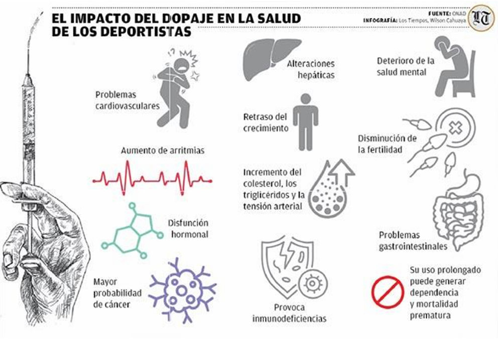

El uso de sustancias en el deporte: un desafío para la salud y la competencia
El dopaje es uno de los flagelos más peligrosos de nuestro tiempo. Recurrir a sustancias y métodos prohibidos en el deporte para aumentar de manera indebida y fraudulenta el rendimiento en una competición supone una violación de los principios éticos de cualquier disciplina deportiva.
Por Santiago Delgado y Alejo García
Introducción
El deporte es una actividad humana que ha evolucionado significativamente a lo largo de la historia, convirtiéndose en un elemento fundamental de la cultura y la sociedad contemporánea. Sin embargo, en la búsqueda constante de la excelencia y el rendimiento, muchos atletas han recurrido al uso de sustancias para mejorar su desempeño físico y obtener una ventaja competitiva.
El uso de sustancias en el deporte es un tema complejo y multifacético que abarca desde la suplementación nutricional hasta el doping, pasando por la medicación y los productos farmacéuticos. Esta práctica ha generado un debate ético, médico y social que involucra a atletas, entrenadores, médicos, organizaciones deportivas y autoridades gubernamentales.
La presión por alcanzar la victoria y el reconocimiento, combinada con la creciente comercialización del deporte, ha llevado a una cultura de "ganar a cualquier precio". Esto ha provocado que muchos atletas asuman riesgos con su salud y su carrera, utilizando sustancias que pueden tener consecuencias graves y duraderas.
El presente artículo busca acercar a los estudiantes del nivel secundario una mirada crítica sobre el uso de sustancias en el deporte, sus causas, consecuencias y la importancia de promover una práctica deportiva sana, justa y libre de riesgos para la salud.
¿Qué entendemos por dopaje?
El dopaje consiste en el consumo de sustancias o la utilización de métodos que mejoran artificialmente el rendimiento deportivo. El dopaje es el acto de consumir sustancias artificiales, y a menudo ilícitas, con el fin de obtener una ventaja sobre los demás en las competiciones deportivas. Puede tratarse de medicamentos, hormonas, anabólicos o incluso transfusiones sanguíneas. Algunas sustancias son legales en ciertos contextos (como la cafeína o la nicotina), mientras que otras están prohibidas por la Agencia Mundial Antidopaje (AMA).
“El dopaje es una práctica lesiva que incurre en la trampa y el engaño, destruyendo así la capacidad del deporte para ser un influyente espejo social en el que se miran sucesivas generaciones de adolescentes para aprender a ganar, a perder, a tener coraje, a ser leales y solidarios, a superarse ante la adversidad.”1
El uso de sustancias o métodos dopantes para mejorar el rendimiento es perjudicial para el espíritu general del deporte. El uso indebido de drogas es dañino para la salud del deportista ya que daña gravemente la integridad, la imagen y el valor del deporte, tanto si la motivación para consumir drogas es mejorar el rendimiento como si no.

Fuente: Los Tiempos
Causas del dopaje
- Presión social y mediática: ganar se ha convertido en un imperativo, y los entrenadores, patrocinadores y el público muchas veces elevan la exigencia al máximo.
- Búsqueda de reconocimiento: alcanzar fama, contratos o medallas puede llevar a los atletas a arriesgar su salud.
- Motivos estéticos: en algunos casos, el deseo de mejorar la imagen corporal motiva el consumo de sustancias.
- Reducción del esfuerzo: ciertas drogas permiten entrenar más, recuperarse más rápido o resistir la fatiga.
El marco legal y los controles
El impacto negativo del dopaje sobre la salud de los deportistas es total, tanto a corto como a largo plazo, y fue esta preocupación la que generó la creación de la Agencia Mundial de Antidopaje (AMA) para que pueda regular las sustancias que se pueden consumir y las que no. Las agencias antidopaje, como la Agencia Mundial Antidopaje (AMA), son las encargadas de regular y sancionar el dopaje en el deporte. Cada año, la AMA publica una lista actualizada de sustancias y métodos prohibidos, que distingue entre sustancias prohibidas en todo momento y aquellas prohibidas solo en competición.
“La Agencia Mundial Antidopaje actualiza la lista de sustancias prohibidas todos los años y para que un medicamento o un método entre en esta lista tiene que cumplir dos de tres criterios: uno, que aumente el rendimiento deportivo; dos, que sea dañino para la salud del deportista, y tres, que vulnere el espíritu deportivo”, aseguró González2.
Los atletas están obligados a pasar controles antidopaje en cualquier momento de la competición. En el caso de que necesiten medicamentos por razones de salud, pueden solicitar una exención por uso terapéutico. El pasaporte biológico permite registrar los valores biológicos de un atleta a lo largo del tiempo, lo que permite detectar cambios anómalos que podrían sugerir dopaje, incluso sin encontrar sustancias prohibidas en un control específico.
Las sanciones también son parte de las normativas antidopaje. Estas no solo afectan a los deportistas, sino también a los entrenadores, nutricionistas o personal médico que facilite el dopaje.
“Entrenadores y nutricionistas deportivos juegan un papel muy importante en la promoción del fair play y la prevención del dopaje, ya que son el principal apoyo del deportista en su camino hacia el máximo rendimiento”3.
La importancia de la prevención
El Comité Olímpico Internacional, seguido de otras organizaciones deportivas internacionales, como la FIFA y otras federaciones, prohibieron el uso de sustancias dopantes, establecieron listas de sustancias prohibidas en el deporte, el control antidopaje y sanciones para los deportistas que infringen las reglas de dopaje. Pero más allá de las sanciones, el desafío es educativo y cultural. Se necesita difundir información clara sobre los riesgos, acompañar a los deportistas con programas de salud y fortalecer valores como el juego limpio, la perseverancia y la aceptación de los propios límites.
Conclusión
El dopaje en el deporte no es solo un problema médico, sino también social, cultural y ético. El deseo de ganar a cualquier precio puede llevar a los atletas a poner en riesgo su salud y su futuro. Frente a este panorama, es fundamental reforzar la educación, tanto en las escuelas como en los clubes, para que los jóvenes comprendan las consecuencias del consumo de estas sustancias y valoren la práctica deportiva como un camino de superación personal y colectiva.
El deporte, en su esencia, es un espacio para aprender disciplina, respeto y trabajo en equipo. Defenderlo de las prácticas de dopaje es defender la salud, la justicia y la verdadera pasión por el juego.
Citas
- “Reflexiones sobre la prevención y lucha contra el dopaje para las organizaciones antidopaje de América Latina y Caribe”. En: https://intercoonecta.aecid.es/Gestin%20del%20conocimiento/Prevencion_y_lucha_contra_el_dopaje.pdf pág. 5
- “El dopaje tiene un impacto negativo sobre la salud de los deportistas en actividad”.En: https://www.lostiempos.com/deportes/entretiempo/20250105/dopaje-tiene-impacto-negativo-salud-deportistas-actividad
- “Dopaje en el deporte: qué es y tipos de sustancias dopantes”. En: https://universidadeuropea.com/blog/dopaje-deporte/
Imagen de portada | iStock
Bibliografía
- El dopaje tiene un impacto negativo sobre la salud de los deportistas en actividad. En: https://www.lostiempos.com/deportes/entretiempo/20250105/dopaje-tiene-impacto-negativo-salud-deportistas-actividad
- “Doping, deporte y sociedad”. En: https://rus.ucf.edu.cu/index.php/rus/article/view/3536/4300
- “Dopaje en el deporte: qué es y tipos de sustancias dopantes”. En: https://universidadeuropea.com/blog/dopaje-deporte/
- “¿Qué es el dopaje?” En: https://www.wbsc.org/es/news/organisation/integrity-unit/anti-doping/about-anti-doping/what-is-doping
- “Reflexiones sobre la prevención y lucha contra el dopaje para las organizaciones antidopaje de América Latina y Caribe”. En: https://intercoonecta.aecid.es/Gestin%20del%20conocimiento/Prevencion_y_lucha_contra_el_dopaje.pdf